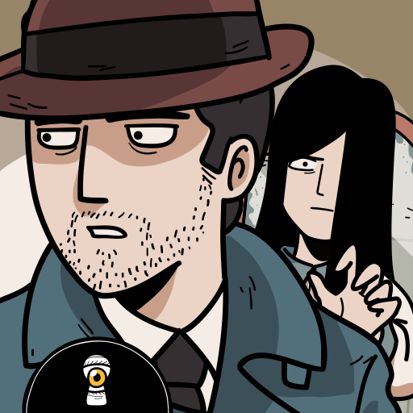
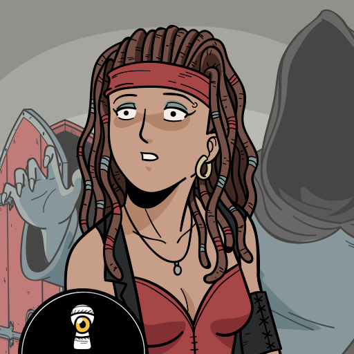

The Ghost Case

The Ghost Case
Em The Ghost Case, o jogador investiga um caso misterioso
envolvendo acontecimentos sobrenaturais.
Ver mais sobre o jogo
O jogo apresenta enigmas, pistas e diferentes locais que precisam
ser investigados para descobrir o que aconteceu.
Haunted Laia

Haunted Laia
Haunted Laia acompanha uma personagem que precisa descobrir
o que aconteceu com ela e encontrar pistas para solucionar o mistério.
Ver mais sobre o jogo
Durante a aventura, o jogador explora diferentes ambientes,
encontra objetos e resolve quebra-cabeças.